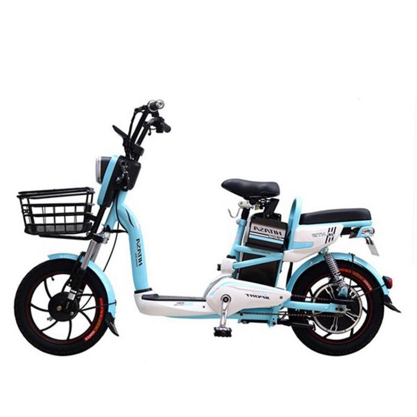
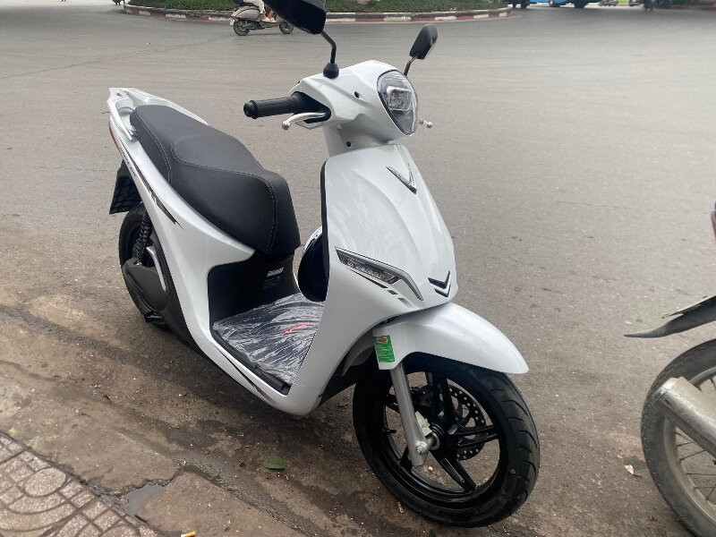
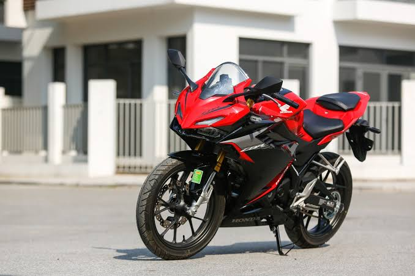

Comparing Electric Bikes (E-bike) and Traditional Bikes
Electric Bikes (E-bikes)
Electric Bike
- Energy source: Rechargeable battery
- Range: About 40–100 km per charge
- Charging time: Around 4–8 hours
- Running cost: Generally low
- Best for: Daily travel and short trips
-

Electric Motorbike
- Energy source: Large rechargeable battery
- Range: 50-200 km per charge
- Charging time: 2-3 hours (depend on the environment)
- Running cost: cheaper than tradition gasoline motorbike
- Best for: Office workers, families that need a long-lasting vehicle
-

Fuel Bikes
Petrol Commuter Bike
- Energy source: Petrol
- Fuel economy: Depends on engine
- Refueling time: A few minutes
- Running cost: Depends on petrol prices
- Best for: Everyday travel and longer trips
-

Sport Bike
- Energy source: Petrol
- Performance: High speed and acceleration
- Refueling time: A few minutes
- Running cost: Can be relatively high
- Best for: Performance and long-distance travel
-

Overall Comparison
- Electrical bikes are quieter and have lower running costs.
- Fuel bikes can be refueled quickly.
- Electric bikes are suitable for city commuting.
- Fuel bikes are convenient for longer journeys.